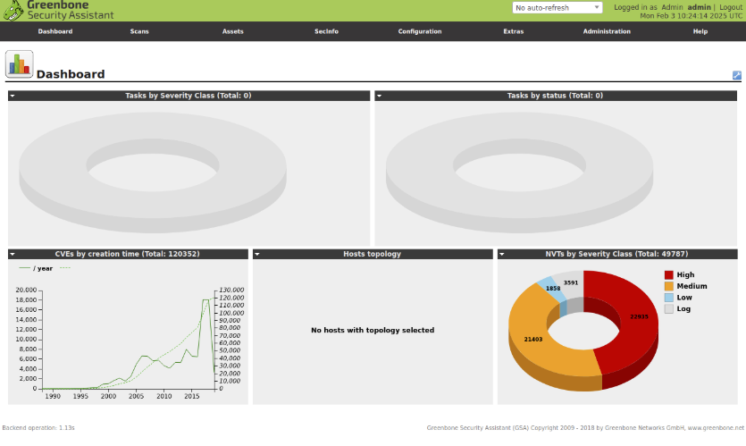
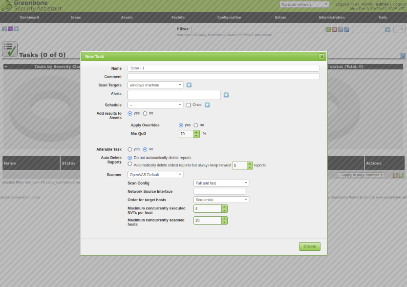
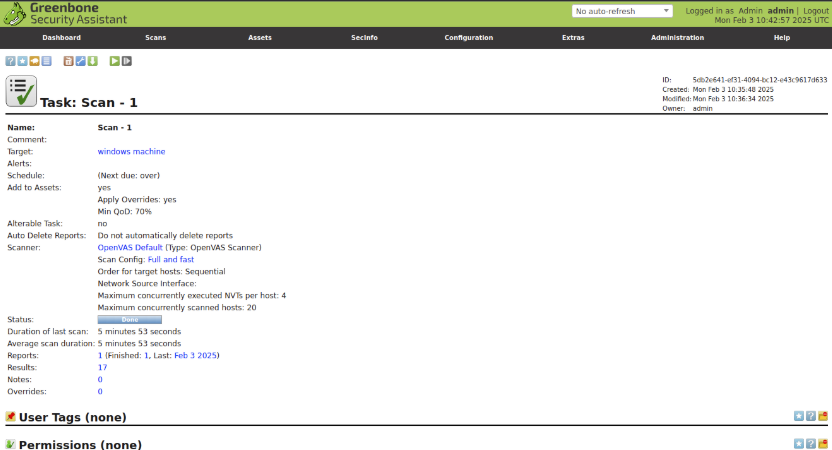
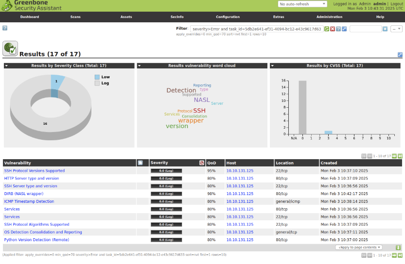

Security Lab
OpenVAS Vulnerability Scanning Lab
This guide documents a vulnerability scanning lab using OpenVAS and Greenbone Security Assistant. The aim was to install the scanner, configure a scan task, scan a lab target, review the findings, and understand how vulnerability results can be turned into remediation actions.
The lab follows a basic vulnerability management workflow: define the scope, configure the scanner, run the scan, review severity and confidence, document the results, and decide what should be fixed, hardened, or investigated further.
Scope
Lab Scope and Objective
Lab Objective
- Deploy OpenVAS in a lab environment.
- Access Greenbone Security Assistant through a browser.
- Create a scan target and scan task.
- Run a vulnerability scan against a lab machine.
- Review findings by severity, QoD, host, and port.
- Document possible remediation actions.
Environment Used
- Ubuntu machine
- Docker
- OpenVAS / Greenbone Security Assistant
- Lab target machine
- Web browser access to the scanner dashboard
This was a controlled lab exercise. The scan target was part of the lab environment, not a production system, company network, or third-party host.
Installation
Installing Docker and Running OpenVAS
Docker was installed on the Ubuntu machine and then used to run OpenVAS in a container. This made it possible to quickly start the scanner and access the Greenbone web interface from the browser.
sudo apt update
sudo apt install docker.io -yAfter Docker was installed, the OpenVAS container was started and mapped to HTTPS on the local machine.
sudo docker run -d -p 443:443 --name openvas mikesplain/openvasThe Greenbone Security Assistant interface was then accessed through:
https://127.0.0.1Dashboard
Greenbone Security Assistant Dashboard
After logging in, the dashboard confirmed that the Greenbone Security Assistant interface was running. At this stage there were no scan tasks yet, but the dashboard showed available vulnerability test data and severity categories.

Greenbone Security Assistant dashboard before creating the scan task.
Checks Completed
- Confirmed the web interface loaded successfully.
- Confirmed the scanner dashboard was reachable through HTTPS.
- Confirmed the admin account could access scan menus.
- Confirmed vulnerability test data was available.
Why This Step Matters
- Verifies the scanner is running.
- Confirms browser access is working.
- Confirms the lab is ready for task creation.
- Provides a baseline before scan results exist.
Scan Configuration
Creating a New Scan Task
A new scan task was created from the Greenbone interface. The task was given a clear name, linked to a lab target, and configured to use the OpenVAS scanner with the Full and fast scan profile.

New scan task configuration using OpenVAS Default and the Full and fast scan config.
Task Settings
- Task name: Scan - 1
- Target: Windows lab machine
- Scanner: OpenVAS Default
- Scan config: Full and fast
- Minimum QoD: 70%
Configuration Reasoning
- A clear task name makes reports easier to identify.
- The target defines which host is scanned.
- Full and fast gives broad coverage for a lab scan.
- QoD helps filter low-confidence findings.
- Keeping reports allows later review and comparison.
Scan Execution
Running the Scan
After the task was created, the scan was started and allowed to complete. The task page showed the scan status, target, scanner, scan configuration, duration, and number of results generated by the scan.

Completed scan task showing scan status, duration, target, scanner, and result count.
Scan Details Reviewed
- Task status
- Scan duration
- Target host
- Scanner used
- Scan configuration
- Number of results
What This Confirmed
- The scan task ran successfully.
- The lab target responded during the scan.
- The scanner generated a report.
- The findings were ready for review.
Results
Reviewing Scan Results
The scan produced 17 results. The results page showed severity distribution, a vulnerability word cloud, CVSS breakdown, affected host, affected port, QoD percentage, and creation time for each finding.

Scan results page showing findings grouped by severity, host, QoD, and port.
Result Fields Reviewed
- Vulnerability name
- Severity
- QoD percentage
- Host
- Port or service location
- Created time
Example Finding Themes
- SSH protocol information
- HTTP server information
- Server version detection
- ICMP timestamp detection
- Directory and service discovery
- Operating system detection
Not every scanner result is automatically a critical vulnerability. Findings need to be reviewed by severity, confidence, exposure, affected service, and impact before remediation work is planned.
Analysis
Interpreting the Findings
Most results in this lab were informational or low severity. Even low-severity findings can still be useful because they reveal exposed services, protocol details, software versions, and host information that may be useful during hardening.
What I Looked For
- Which ports were visible to the scanner.
- Which services were detected.
- Whether software versions were exposed.
- Whether SSH or HTTP details were disclosed.
- Whether any findings required immediate action.
Risk Review Questions
- Is the service required?
- Is the port exposed only inside the lab?
- Does the finding reveal version information?
- Is the software outdated?
- Can the finding be reduced through hardening?
Remediation
Example Remediation Notes
After reviewing the findings, the next step would be to record remediation actions. In a real vulnerability management workflow, each finding would have an owner, status, action, and validation result after a rescan.
Possible Actions
- Disable unused services.
- Restrict access to exposed ports.
- Update outdated packages.
- Harden SSH configuration.
- Reduce unnecessary version disclosure.
- Review web server configuration.
Tracking Fields
- Finding name
- Affected host
- Affected port
- Severity
- Remediation action
- Validation status
- Rescan result
Example Remediation Record
Finding: HTTP server type and version detected
Host: Lab target
Port: 80/tcp
Severity: Informational / Low
Action: Review web server version disclosure and update packages if required
Validation: Rescan target after configuration changesDocumentation
What Was Documented
The lab was documented so the scanning process could be repeated and explained clearly. Vulnerability scanning is not only about running a tool; it also requires scope, scan settings, results, decisions, and follow-up actions to be recorded.
Lab Notes
- Installation steps
- Docker command used to run OpenVAS
- Dashboard access method
- Task configuration
- Scan target details
- Scan results summary
Security Notes
- Severity review
- QoD review
- Finding categories
- Ports and services observed
- Remediation ideas
- Rescan requirement after changes
Lessons Learned
Key Takeaways
This lab showed how vulnerability scanning fits into a security workflow. The scanner can identify exposed services and possible weaknesses, but the important part is interpreting the results correctly and deciding what action should follow.
Technical Takeaways
- OpenVAS can be deployed quickly in a lab using Docker.
- Scan configuration affects the type and quality of results.
- QoD helps judge confidence in findings.
- Results need manual review before remediation decisions.
- Rescanning is needed to confirm fixes.
Security Takeaways
- Service discovery is useful even when severity is low.
- Exposed version information can help attackers.
- Vulnerability results should be prioritised by risk.
- Documentation makes remediation easier to track.
- Scanning should be part of a repeatable process.
Skills